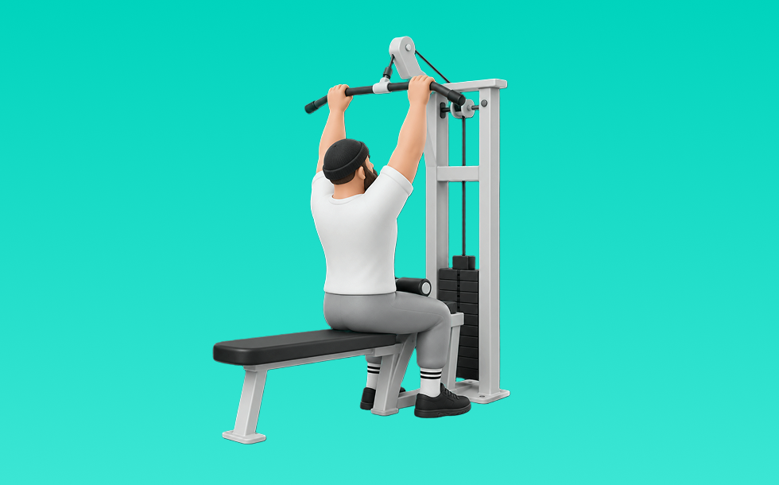

ラットプルダウン

ラットプルダウンは、ケーブルを使って背中を鍛える種目です。胸を軽く張り、バーやグリップを鎖骨の近くへ引き下げます。ワイド、パラレル、MAGグリップ、ストレートアームなどのバリエーションがあります。
- 対象部位
- 背中
- 器具
- ケーブル
- 記録形式
- 重量・回数
- 別名
- プルダウン / ラットプル / ワイドプルダウン / ストレートアームプルダウン
バリエーション
- ワイドグリップ 広めに握り、背中の広がりを意識しやすい形です。
- パラレルグリップ 手のひらを向かい合わせて握り、肩まわりを動かしやすい形です。
- MAGグリップ ミディアムやクローズなど、握り幅と向きを変えて調整できます。
- ストレートアーム 肘を大きく曲げずに引き、広背筋の動きを確認しやすい形です。
YouTube動画
-
背中を鍛える正しいラットプルダウンのやり方【筋トレ】
-
【初心者向け】ラットプルダウンのやり方｜効果的なフォームの解説
-
背中を美しくする！"ラットプルダウン"の解説！【筋トレ】【女子】
-
背中を鍛えるラットプルダウンのやり方[筋トレ]
-
【背中の基本】初心者でも背中に効くラットプルダウンを解説します
-
【ちょこざっぷ】これ観たらラットプルダウンが扱えて背中美人まっしぐら！背中痩せトレーニング【筋トレ女子】
-
【超簡単】フロント、ビハインド、アンダーグリップのラットプルダウン3種目のポイントを徹底解説です。
-
【筋トレ悪いフォーム解説】ラットプルダウンで広背筋へ効かせるテクニック！
-
【ジム初心者】ラットプルダウンの使い方をプロが分かりやすく解説！【筋トレ】
-
【背中トレ】ラットプルダウンのマシンを使い方から完全解説【佐野市の24時間ジム：AEGYM】
-
【筋トレ】難しい背中のトレーニングもこれで完璧！ラットプルダウンの動きを細かく解説します！
-
背中を鍛える！ラットプルダウンの正しい使い方
-
【ラットプルダウン徹底解説！】初心者でも◎背中に効かせるフォーム・重量
-
＜背中＞ラットマシン：基本編
-
【永久保存版】背中トレの王道「ラットプルダウン」の正しいやり方をボディビルダージュラシック木澤が解説！！
-
女性も必見！綺麗な背中！ジムトレ定番「ラットプルダウン」の効果的な使い方
-
筋トレ初心者は絶対にラットプルダウンを高重量でやるな！もっとやるべきことが沢山ある。
-
【それNGです】ラットプルダウン：5つのエラー動作と改善方法
-
【ジムトレ】首や肩に負担をかけない「ラットプルダウン」の使い方。効果的に背中を鍛えるための練習法とは
-
【広背筋・上腕二頭筋 】ラットプルダウン(逆手)の正しいフォーム・やり方 | 「肩痛い」「姿勢がわからない」方ぜひ！
-
体の硬い人が選ぶべきラットプルダウンのアタッチメント【MAG】
-
【背中の筋肥大 】正しいラットプルダウンのやり方と注意点【チンニングと徹底比較】
YouTubeショート
-
ラットプルダウンで背中を使う方法 #フィットネス #筋トレ
-
みなさんはラットプルダウンどのようにされてますか？？今回は持田選手がラットプルダウンを伝授！次はどの種目の解説をやってほしいかコメントしてね！#ちょこっと惜しい
-
正しいラットプルダウンのやり方
-
背中が急成長するラットプルダウンの基本
-
【初心者向け】ラットプルダウン3つのポイント#shorts #youtubeshorts #筋トレ #ラットプルダウン #筋肥大 #筋トレ大学 #筋肉博士
-
ひろゆきボイスでラットプルダウン解説 #筋トレ女子
-
ラットプルダウンよくある3つの間違いとその改善方法【筋トレ】
-
上級者と初心者のラットプルダウンの違い
-
めっちゃ効くラットプルダウンのやり方※エゴイスト
-
ラットプルダウンの正しいやり方を解説します！【佐野市の24時間ジム：AEGYM】 #Shorts #ジム通い #筋トレ #ジム初心者
-
ラットプルダウンの効き方が激変する
-
ラットプルのやり方直して下さい#shorts
-
正しいラットプルダウンのやり方
-
背中デカならん人がやりがちなラットプルダウン3つの特徴
-
ラットプルダウンの使い方！# #筋トレあるある #筋トレ初心者 #ラットプルダウン
-
ラットプルダウンで背中を意識させる方法
-
背中トレが苦手な人必見！ラットプルダウンのポイント
-
【藍住店女性ルーム】ラットプルダウン 使い方動画
-
【ラットプルダウン】背中に効かない3つの間違い #パーソナルトレーナー #筋トレ #ラットプルダウン #フィットネス
-
背中トレのやり方🔥〜ダンベルワンハンドロー基礎編〜 #筋トレ #マッチョ #筋肉社長 #背中トレ
-
【ダンベル】背中トレ4選 #筋トレ
-
腕ばかり効いてしまう人必見 ラットプルダウン正しい使い方教えます
動作方法
- 胸を軽く張り、肩を下げて構える
- 肘を引く意識で、狙う部位に負荷を乗せる
- 戻し動作もコントロールして、負荷を抜かない
動作ポイント
- 腰を反りすぎない
- 肩が前に出ないようにする
- 勢いで引かない
ワンポイントアドバイス
- 腕ではなく背中で引く感覚を優先する
- 反動が増えたら重量を一段下げる
目的別回数設定
目的や体力に応じた一般的な目安です。無理のない範囲で調整してください。
- 筋力アップ
- 1〜5回
- 筋肥大
- 6〜12回
- 持久力アップ
- 13〜20回
YouTube動画について
動画はYouTubeの公開情報をもとに表示しています。内容は投稿者によるもので、Biggrによる監修ではありません。
アプリを入手
筋トレやトレーニングの記録はBiggrにお任せください。今すぐ無料で使い始められます。